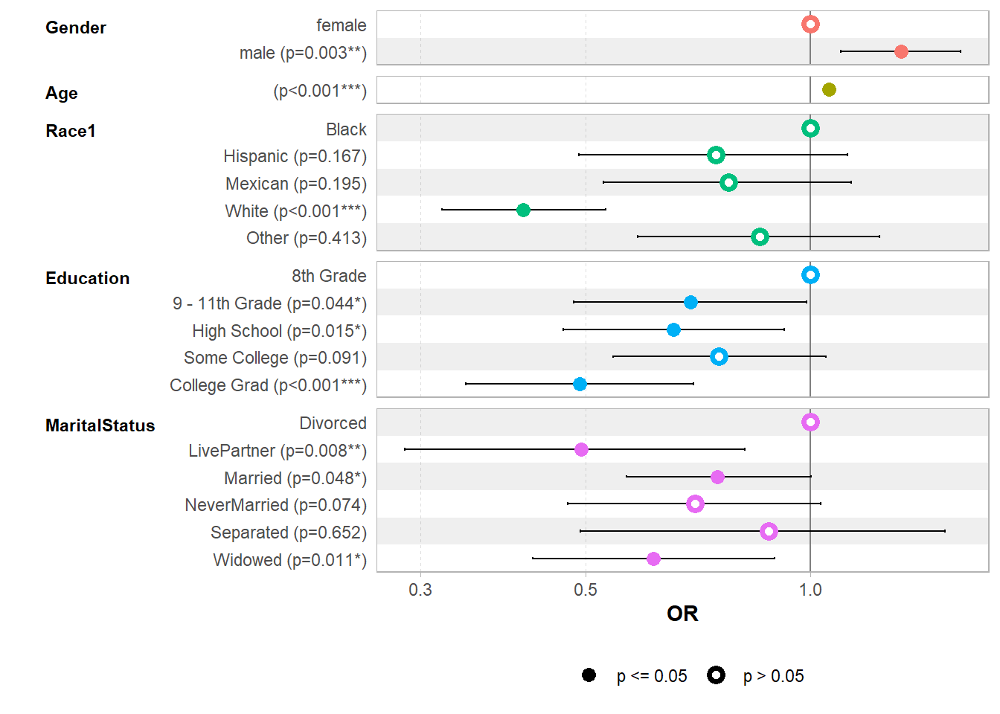
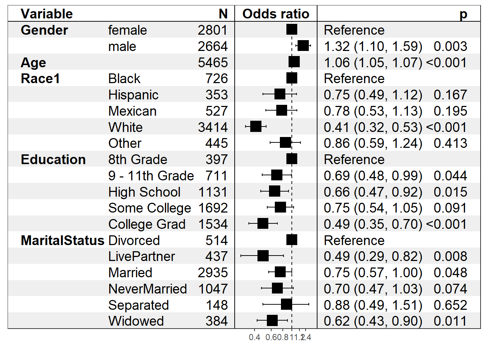

library(tidyverse)
library(gtsummary)
library(broom)
library(questionr)
library(knitr)
library(car)8 Regression Logistique
8.1 Import des données
Pour cette séance, nous allons utiliser le jeu de données NHANES disponible dans le package du même nom.
Il s’agit de données de santé provenant de l’enquête américaine National Health and Nutrition Examination Survey (NHANES). Il contient des données sociale, comportementales et de santé.
Une description des données est disponible dans le descriptif du package lien
library(NHANES)
data("NHANES")
dim(NHANES)[1] 10000 76Dans ces données il semble y avoir des doublons. Nous allons les supprimer en utilisant la fonction distinct() de dplyr. Cette fonction ne garde qu’une ligne pour un groupe de lignes qui sont absolument identiques
NHANES <- NHANES %>% distinct()
dim(NHANES)[1] 7832 76Nous sommes passés de 10000 à 7155 observations
Résumé des données
summary(NHANES) ID SurveyYr Gender Age AgeDecade
Min. :51624 2009_10:3568 female:3943 Min. : 0.00 0-9 :1212
1st Qu.:57388 2011_12:4264 male :3889 1st Qu.:16.00 10-19 :1142
Median :62914 Median :35.00 30-39 :1038
Mean :62369 Mean :35.97 20-29 :1023
3rd Qu.:67408 3rd Qu.:54.00 40-49 :1010
Max. :71915 Max. :80.00 (Other):2124
NA's : 283
AgeMonths Race1 Race3 Education
Min. : 0.0 Black :1073 Asian : 281 8th Grade : 397
1st Qu.:169.0 Hispanic: 538 Black : 563 9 - 11th Grade: 712
Median :387.0 Mexican : 920 Hispanic: 317 High School :1131
Mean :403.1 White :4626 Mexican : 451 Some College :1695
3rd Qu.:615.0 Other : 675 White :2510 College Grad :1534
Max. :959.0 Other : 142 NA's :2363
NA's :4271 NA's :3568
MaritalStatus HHIncome HHIncomeMid Poverty
Divorced : 516 more 99999 :1588 Min. : 2500 Min. :0.000
LivePartner : 438 75000-99999: 809 1st Qu.: 22500 1st Qu.:1.130
Married :2940 25000-34999: 784 Median : 50000 Median :2.400
NeverMarried:1048 35000-44999: 691 Mean : 54862 Mean :2.664
Separated : 148 45000-54999: 596 3rd Qu.: 87500 3rd Qu.:4.500
Widowed : 384 (Other) :2711 Max. :100000 Max. :5.000
NA's :2358 NA's : 653 NA's :653 NA's :578
HomeRooms HomeOwn Work Weight
Min. : 1.000 Own :4845 Looking : 244 Min. : 2.80
1st Qu.: 5.000 Rent :2753 NotWorking:2290 1st Qu.: 54.35
Median : 6.000 Other: 184 Working :3376 Median : 71.60
Mean : 6.173 NA's : 50 NA's :1922 Mean : 69.67
3rd Qu.: 7.000 3rd Qu.: 87.90
Max. :13.000 Max. :230.70
NA's :54 NA's :61
Length HeadCirc Height BMI
Min. : 47.10 Min. :34.20 Min. : 83.6 Min. :12.88
1st Qu.: 75.15 1st Qu.:39.50 1st Qu.:155.8 1st Qu.:21.40
Median : 87.05 Median :41.30 Median :165.4 Median :25.83
Mean : 84.89 Mean :41.10 Mean :160.9 Mean :26.52
3rd Qu.: 95.80 3rd Qu.:42.98 3rd Qu.:173.9 3rd Qu.:30.64
Max. :112.20 Max. :45.40 Max. :200.4 Max. :81.25
NA's :7334 NA's :7750 NA's :317 NA's :327
BMICatUnder20yrs BMI_WHO Pulse BPSysAve
UnderWeight: 47 12.0_18.5 :1070 Min. : 40.00 Min. : 76.0
NormWeight : 709 18.5_to_24.9:2261 1st Qu.: 66.00 1st Qu.:106.0
OverWeight : 180 25.0_to_29.9:2067 Median : 72.00 Median :116.0
Obese : 197 30.0_plus :2081 Mean : 73.58 Mean :118.1
NA's :6699 NA's : 353 3rd Qu.: 82.00 3rd Qu.:127.0
Max. :136.00 Max. :226.0
NA's :1236 NA's :1246
BPDiaAve BPSys1 BPDia1 BPSys2
Min. : 0.00 Min. : 72 Min. : 0.0 Min. : 76.0
1st Qu.: 60.00 1st Qu.:106 1st Qu.: 60.0 1st Qu.:106.0
Median : 68.00 Median :116 Median : 68.0 Median :116.0
Mean : 67.03 Mean :119 Mean : 67.9 Mean :118.4
3rd Qu.: 76.00 3rd Qu.:128 3rd Qu.: 76.0 3rd Qu.:128.0
Max. :116.00 Max. :232 Max. :118.0 Max. :226.0
NA's :1246 NA's :1497 NA's :1497 NA's :1404
BPDia2 BPSys3 BPDia3 Testosterone
Min. : 0.00 Min. : 76.0 Min. : 0.00 Min. : 0.25
1st Qu.: 60.00 1st Qu.:106.0 1st Qu.: 60.00 1st Qu.: 17.53
Median : 68.00 Median :116.0 Median : 68.00 Median : 40.69
Mean : 67.19 Mean :117.9 Mean : 66.83 Mean : 193.72
3rd Qu.: 76.00 3rd Qu.:126.0 3rd Qu.: 76.00 3rd Qu.: 352.32
Max. :118.00 Max. :226.0 Max. :116.00 Max. :1795.60
NA's :1404 NA's :1400 NA's :1400 NA's :4354
DirectChol TotChol UrineVol1 UrineFlow1
Min. :0.390 Min. : 1.530 Min. : 0.0 Min. : 0.0000
1st Qu.:1.090 1st Qu.: 4.060 1st Qu.: 49.0 1st Qu.: 0.3970
Median :1.290 Median : 4.730 Median : 92.0 Median : 0.6820
Mean :1.359 Mean : 4.841 Mean :117.1 Mean : 0.9649
3rd Qu.:1.580 3rd Qu.: 5.480 3rd Qu.:162.0 3rd Qu.: 1.2130
Max. :4.030 Max. :13.650 Max. :510.0 Max. :17.1670
NA's :1296 NA's :1296 NA's :865 NA's :1340
UrineVol2 UrineFlow2 Diabetes DiabetesAge HealthGen
Min. : 0.0 Min. : 0.000 No :7077 Min. : 1.00 Excellent: 661
1st Qu.: 50.0 1st Qu.: 0.482 Yes : 622 1st Qu.:40.00 Vgood :1848
Median : 92.5 Median : 0.765 NA's: 133 Median :50.00 Good :2272
Mean :119.5 Mean : 1.154 Mean :49.07 Fair : 829
3rd Qu.:171.8 3rd Qu.: 1.507 3rd Qu.:60.00 Poor : 155
Max. :409.0 Max. :13.692 Max. :80.00 NA's :2067
NA's :6670 NA's :6671 NA's :7315
DaysPhysHlthBad DaysMentHlthBad LittleInterest Depressed
Min. : 0.000 Min. : 0.000 None :3837 None :3937
1st Qu.: 0.000 1st Qu.: 0.000 Several: 869 Several: 783
Median : 0.000 Median : 0.000 Most : 343 Most : 331
Mean : 3.423 Mean : 4.112 NA's :2783 NA's :2781
3rd Qu.: 3.000 3rd Qu.: 4.000
Max. :30.000 Max. :30.000
NA's :2074 NA's :2072
nPregnancies nBabies Age1stBaby SleepHrsNight
Min. : 1.000 Min. : 0.000 Min. :14.00 Min. : 2.000
1st Qu.: 2.000 1st Qu.: 2.000 1st Qu.:19.00 1st Qu.: 6.000
Median : 3.000 Median : 2.000 Median :22.00 Median : 7.000
Mean : 3.087 Mean : 2.503 Mean :22.48 Mean : 6.904
3rd Qu.: 4.000 3rd Qu.: 3.000 3rd Qu.:25.00 3rd Qu.: 8.000
Max. :32.000 Max. :12.000 Max. :39.00 Max. :12.000
NA's :5840 NA's :5986 NA's :6375 NA's :1935
SleepTrouble PhysActive PhysActiveDays TVHrsDay CompHrsDay
No :4430 No :2853 Min. :1.000 2_hr :1082 0_to_1_hr:1194
Yes :1481 Yes :3521 1st Qu.:2.000 1_hr : 741 0_hrs : 953
NA's:1921 NA's:1458 Median :3.000 3_hr : 727 1_hr : 844
Mean :3.753 0_to_1_hr: 526 2_hr : 491
3rd Qu.:5.000 More_4_hr: 524 3_hr : 298
Max. :7.000 (Other) : 528 (Other) : 352
NA's :4019 NA's :3704 NA's :3700
TVHrsDayChild CompHrsDayChild Alcohol12PlusYr AlcoholDay
Min. :0.000 Min. :0.000 No :1087 Min. : 1.000
1st Qu.:1.000 1st Qu.:0.000 Yes :3892 1st Qu.: 1.000
Median :2.000 Median :1.000 NA's:2853 Median : 2.000
Mean :1.979 Mean :2.255 Mean : 2.947
3rd Qu.:3.000 3rd Qu.:6.000 3rd Qu.: 3.000
Max. :6.000 Max. :6.000 Max. :82.000
NA's :7298 NA's :7298 NA's :4160
AlcoholYear SmokeNow Smoke100 Smoke100n SmokeAge
Min. : 0.00 No :1307 No :3055 Non-Smoker:3055 Min. : 6.00
1st Qu.: 3.00 Yes :1116 Yes :2423 Smoker :2423 1st Qu.:15.00
Median : 24.00 NA's:5409 NA's:2354 NA's :2354 Median :17.00
Mean : 73.33 Mean :17.75
3rd Qu.:104.00 3rd Qu.:19.00
Max. :364.00 Max. :72.00
NA's :3388 NA's :5507
Marijuana AgeFirstMarij RegularMarij AgeRegMarij HardDrugs
No :1573 Min. : 1.00 No :2679 Min. : 5.00 No :3547
Yes :2096 1st Qu.:15.00 Yes : 990 1st Qu.:15.00 Yes : 764
NA's:4163 Median :16.00 NA's:4163 Median :17.00 NA's:3521
Mean :17.02 Mean :17.65
3rd Qu.:18.00 3rd Qu.:19.00
Max. :48.00 Max. :52.00
NA's :5737 NA's :6842
SexEver SexAge SexNumPartnLife SexNumPartYear SameSex
No : 175 Min. : 9.00 Min. : 0.0 Min. : 0.000 No :4000
Yes :4137 1st Qu.:15.00 1st Qu.: 2.0 1st Qu.: 1.000 Yes : 312
NA's:3520 Median :17.00 Median : 5.0 Median : 1.000 NA's:3520
Mean :17.41 Mean : 15.4 Mean : 1.327
3rd Qu.:19.00 3rd Qu.: 12.0 3rd Qu.: 1.000
Max. :50.00 Max. :2000.0 Max. :69.000
NA's :3699 NA's :3552 NA's :4172
SexOrientation PregnantNow
Bisexual : 91 Yes : 54
Heterosexual:3426 No :1197
Homosexual : 70 Unknown: 41
NA's :4245 NA's :6540
Pour modéliser / étudier une variable binaire en fonction d’une ou plusieurs autres variables, on peut réaliser une régression logistique.
8.2 Préparation
Avant de commencer il faut s’assurer que nos variables sont correctement codées. La modalité de réference doit être la première modalité de notre variable facteur.
De plus, pour la variable d’outcome binaire, dans la plupart des cas, les deux modalités doivent être codées en 0 et 1.
class(NHANES$Diabetes)[1] "factor"levels(NHANES$Diabetes)[1] "No" "Yes"Meme si R peut gérer les facteurs Oui/Non, il est préférable de recoder en OUI = 1 et NON = 0 pour être sûr que R traite bien le Non en 0. Dans notre cas, c’est déjà le cas mais voici en rappel la commande pour recoder.
NHANES$Diabetes.lvl <- ifelse(NHANES$Diabetes == "Yes", 1, 0)
freq(NHANES$Diabetes) n % val%
No 7077 90.4 91.9
Yes 622 7.9 8.1
NA 133 1.7 NALors de la régression les observations manquantes seront exclus lors du calcul du modèle.
Description
tbl_summary(data=NHANES,
by= Diabetes,
include = c(Gender, Age, Race1, Education, MaritalStatus)) %>%
add_p() %>%
bold_labels() %>%
modify_spanning_header(
update = all_stat_cols() ~ "Diabete"
)133 missing rows in the "Diabetes" column have been removed.Warning: The `update` argument of `modify_spanning_header()` is deprecated as of
gtsummary 2.0.0.
ℹ Use `modify_spanning_header(...)` input instead. Dynamic dots allow for
syntax like `modify_spanning_header(!!!list(...))`.
ℹ The deprecated feature was likely used in the gtsummary package.
Please report the issue at <https://github.com/ddsjoberg/gtsummary/issues>.| Characteristic |
Diabete
|
p-value2 | |
|---|---|---|---|
| No N = 7,0771 |
Yes N = 6221 |
||
| Gender | 0.2 | ||
| female | 3,579 (51%) | 298 (48%) | |
| male | 3,498 (49%) | 324 (52%) | |
| Age | 32 (15, 51) | 62 (51, 70) | <0.001 |
| Race1 | <0.001 | ||
| Black | 939 (13%) | 121 (19%) | |
| Hispanic | 486 (6.9%) | 45 (7.2%) | |
| Mexican | 834 (12%) | 62 (10.0%) | |
| White | 4,216 (60%) | 336 (54%) | |
| Other | 602 (8.5%) | 58 (9.3%) | |
| Education | <0.001 | ||
| 8th Grade | 307 (6.3%) | 90 (15%) | |
| 9 - 11th Grade | 621 (13%) | 90 (15%) | |
| High School | 1,005 (21%) | 126 (21%) | |
| Some College | 1,506 (31%) | 189 (31%) | |
| College Grad | 1,419 (29%) | 115 (19%) | |
| Unknown | 2,219 | 12 | |
| MaritalStatus | <0.001 | ||
| Divorced | 437 (9.0%) | 78 (13%) | |
| LivePartner | 417 (8.6%) | 21 (3.4%) | |
| Married | 2,596 (53%) | 344 (56%) | |
| NeverMarried | 991 (20%) | 57 (9.4%) | |
| Separated | 128 (2.6%) | 20 (3.3%) | |
| Widowed | 295 (6.1%) | 89 (15%) | |
| Unknown | 2,213 | 13 | |
| 1 n (%); Median (Q1, Q3) | |||
| 2 Pearson’s Chi-squared test; Wilcoxon rank sum test | |||
8.3 Calcul de la régression
La fonction permettant de réaliser une régression logistique, ainsi que la plupart des modèles de régression généralisés est glm()
Le type de régression réalisée est spécifié avec les argument family et link.
Pour une regression logistique, la famille est binomial et le lien log
Le reste des arguments est similaire à la fonction lm()
\[ glm(\text{Variable Binaire} \sim \text{x}_1 + \text{x}_2 +\text{x}_3, \text{ family = binomial, data }= \text{Dataset}) \]
Exemple
reg.log <- glm(Diabetes.lvl ~ Gender + Age + Race1 + Education + MaritalStatus, family = binomial, data = NHANES)
summary(reg.log)
Call:
glm(formula = Diabetes.lvl ~ Gender + Age + Race1 + Education +
MaritalStatus, family = binomial, data = NHANES)
Coefficients:
Estimate Std. Error z value Pr(>|z|)
(Intercept) -4.004556 0.308722 -12.971 < 2e-16 ***
Gendermale 0.279626 0.094567 2.957 0.00311 **
Age 0.057380 0.003474 16.518 < 2e-16 ***
Race1Hispanic -0.291916 0.211310 -1.381 0.16714
Race1Mexican -0.251640 0.194380 -1.295 0.19547
Race1White -0.886189 0.128409 -6.901 5.15e-12 ***
Race1Other -0.155254 0.189690 -0.818 0.41309
Education9 - 11th Grade -0.369399 0.183350 -2.015 0.04393 *
EducationHigh School -0.422582 0.174118 -2.427 0.01522 *
EducationSome College -0.281872 0.167027 -1.688 0.09149 .
EducationCollege Grad -0.711511 0.179108 -3.973 7.11e-05 ***
MaritalStatusLivePartner -0.707662 0.267017 -2.650 0.00804 **
MaritalStatusMarried -0.287169 0.145067 -1.980 0.04775 *
MaritalStatusNeverMarried -0.355132 0.198771 -1.787 0.07400 .
MaritalStatusSeparated -0.128768 0.285637 -0.451 0.65213
MaritalStatusWidowed -0.483216 0.189786 -2.546 0.01089 *
---
Signif. codes: 0 '***' 0.001 '**' 0.01 '*' 0.05 '.' 0.1 ' ' 1
(Dispersion parameter for binomial family taken to be 1)
Null deviance: 3816.0 on 5464 degrees of freedom
Residual deviance: 3291.1 on 5449 degrees of freedom
(2367 observations deleted due to missingness)
AIC: 3323.1
Number of Fisher Scoring iterations: 6Attention : les coefficients affichés correspondent aux log odds-ratio et non aux odds-ratio.
On peut exporter les coefficients dans un tableau avec la fonction tbl_regression() du package GTsummary
tbl_regression(reg.log)| Characteristic | log(OR) | 95% CI | p-value |
|---|---|---|---|
| Gender | |||
| female | — | — | |
| male | 0.28 | 0.09, 0.47 | 0.003 |
| Age | 0.06 | 0.05, 0.06 | <0.001 |
| Race1 | |||
| Black | — | — | |
| Hispanic | -0.29 | -0.71, 0.12 | 0.2 |
| Mexican | -0.25 | -0.64, 0.13 | 0.2 |
| White | -0.89 | -1.1, -0.63 | <0.001 |
| Other | -0.16 | -0.53, 0.21 | 0.4 |
| Education | |||
| 8th Grade | — | — | |
| 9 - 11th Grade | -0.37 | -0.73, -0.01 | 0.044 |
| High School | -0.42 | -0.76, -0.08 | 0.015 |
| Some College | -0.28 | -0.61, 0.05 | 0.091 |
| College Grad | -0.71 | -1.1, -0.36 | <0.001 |
| MaritalStatus | |||
| Divorced | — | — | |
| LivePartner | -0.71 | -1.3, -0.20 | 0.008 |
| Married | -0.29 | -0.57, 0.00 | 0.048 |
| NeverMarried | -0.36 | -0.75, 0.03 | 0.074 |
| Separated | -0.13 | -0.71, 0.41 | 0.7 |
| Widowed | -0.48 | -0.86, -0.11 | 0.011 |
| Abbreviations: CI = Confidence Interval, OR = Odds Ratio | |||
Un avantage de cette fonction est qu’elle affiche les modalités de référence.
Il faut ajouter l’option exponentiate = TRUE pour afficher les OR plutôt que les log(OR) :
tbl_regression(reg.log,exponentiate = TRUE)| Characteristic | OR | 95% CI | p-value |
|---|---|---|---|
| Gender | |||
| female | — | — | |
| male | 1.32 | 1.10, 1.59 | 0.003 |
| Age | 1.06 | 1.05, 1.07 | <0.001 |
| Race1 | |||
| Black | — | — | |
| Hispanic | 0.75 | 0.49, 1.12 | 0.2 |
| Mexican | 0.78 | 0.53, 1.13 | 0.2 |
| White | 0.41 | 0.32, 0.53 | <0.001 |
| Other | 0.86 | 0.59, 1.24 | 0.4 |
| Education | |||
| 8th Grade | — | — | |
| 9 - 11th Grade | 0.69 | 0.48, 0.99 | 0.044 |
| High School | 0.66 | 0.47, 0.92 | 0.015 |
| Some College | 0.75 | 0.54, 1.05 | 0.091 |
| College Grad | 0.49 | 0.35, 0.70 | <0.001 |
| MaritalStatus | |||
| Divorced | — | — | |
| LivePartner | 0.49 | 0.29, 0.82 | 0.008 |
| Married | 0.75 | 0.57, 1.00 | 0.048 |
| NeverMarried | 0.70 | 0.47, 1.03 | 0.074 |
| Separated | 0.88 | 0.49, 1.51 | 0.7 |
| Widowed | 0.62 | 0.43, 0.90 | 0.011 |
| Abbreviations: CI = Confidence Interval, OR = Odds Ratio | |||
8.4 Les tests
8.4.1 Test de nullité de chaque coefficient
Dans les sorties de summary() et tbl_regression, pour chaque coefficient, on a la p-valeur associée au test de nullité de ce coefficient (associé à la modalité et non pas à la variable pour les variables catégorielles).
8.4.2 Test de l’effet global d’une variable
Pour les variables continues, le test de l’effet global est le même que celui de nullité du coefficient donné dans la fonction summary()
Pour les variables catégorielles, on peut tester si elle un un effet sur la probabilité d’observer Y=Yref sachant les autres variables dans le modèle avec le test de type III. On peut obtenir ce test avec la fonction Anova() du package car ( avec un A majuscule à ne pas confondre anova())
Anova(reg.log, type = "III")Analysis of Deviance Table (Type III tests)
Response: Diabetes.lvl
LR Chisq Df Pr(>Chisq)
Gender 8.783 1 0.0030400 **
Age 304.433 1 < 2.2e-16 ***
Race1 60.569 4 2.203e-12 ***
Education 19.095 4 0.0007527 ***
MaritalStatus 11.337 5 0.0450975 *
---
Signif. codes: 0 '***' 0.001 '**' 0.01 '*' 0.05 '.' 0.1 ' ' 18.4.3 Test de nullité de tous les coefficients
Pour tester que les coefficients sont non tous nuls, on peut réaliser trois tests: le test du rapport de vraisemblance, le test de Wald et le test du score. Nous présentons ici uniquement le test du rapport de vraisemblance.
Le test du rapport de vraisemblance s’obtient avec la fonction anova() ( avec un a minuscule cette fois ) pour comparer notre modèle au modèle nul (i.e. avec juste l’intercept). Attention, le modèle nul doit être ajusté sur les mêmes données que le modèle étudié…
dataReg <- na.omit(NHANES %>% select(c(Diabetes.lvl, Gender , Age, Race1, Education, MaritalStatus)))
M0 <- glm(Diabetes.lvl ~ 1, family = binomial, data = dataReg)
summary(M0)
Call:
glm(formula = Diabetes.lvl ~ 1, family = binomial, data = dataReg)
Coefficients:
Estimate Std. Error z value Pr(>|z|)
(Intercept) -2.07800 0.04302 -48.31 <2e-16 ***
---
Signif. codes: 0 '***' 0.001 '**' 0.01 '*' 0.05 '.' 0.1 ' ' 1
(Dispersion parameter for binomial family taken to be 1)
Null deviance: 3816 on 5464 degrees of freedom
Residual deviance: 3816 on 5464 degrees of freedom
AIC: 3818
Number of Fisher Scoring iterations: 4anova(reg.log, M0, test = "Chisq")Analysis of Deviance Table
Model 1: Diabetes.lvl ~ Gender + Age + Race1 + Education + MaritalStatus
Model 2: Diabetes.lvl ~ 1
Resid. Df Resid. Dev Df Deviance Pr(>Chi)
1 5449 3291.1
2 5464 3816.0 -15 -524.84 < 2.2e-16 ***
---
Signif. codes: 0 '***' 0.001 '**' 0.01 '*' 0.05 '.' 0.1 ' ' 1Ici, on rejette H0 au seuil de 95%, les coefficients sont non tous nuls
Rappel Odd-ratio
exemple extrait de https://larmarange.github.io/
Pour comprendre la notion de côte (odd en anglais), on peut se référer aux paris sportifs. Par exemple, lorsque les trois quarts des parieurs parient que le cheval A va remporter la course, on dit alors que ce cheval à une côte de trois contre un (trois personnes parient qu’il va gagner contre une personne qu’il va perdre). Prenons un autre cheval B: si les deux tiers pensent que le cheval B va perdre (donc un tiers pense qu’il va gagner), on dira alors que sa côte est de un contre deux (une personne pense qu’il va gagner contre deux qu’il va perdre).
Si l’on connait la proportion ou probabilité \(p\) d’avoir vécu ou de vivre un évènement donné (ici gagner la course), la côte (l’odd) s’obtient avec la formule suivante : \(p/(1-p)\).
La côte du cheval A est bien \(0.75/(1-0.75) = 6\) est celle du cheval B \((1/3)/(2/3)=1/2=0.5\).
Pour comparer deux côtes (par exemple pour savoir si le cheval A a une probabilité plus élevée de remporter la course que le cheval B, selon les parieurs), on calculera tout simplement le rapport des côtes ou odds ratio (OR) : \(OR_{A/B} ) = Odds_{A}/Odds_{B}=3/0.5=6\).
L’odds ratio est donc égal à 1 si les deux côtes sont identiques, est supérieur à 1 si le cheval A une probabilité supérieure à celle du cheval B, et inférieur à 1 si c’est probabilité est inférieure.
8.5 Extraction des données de la régression
Pour extraire les coefficients, on utilise la commande reg$coefficients
coef <- reg.log$coefficients
coef (Intercept) Gendermale Age
-4.0045560 0.2796260 0.0573795
Race1Hispanic Race1Mexican Race1White
-0.2919157 -0.2516401 -0.8861893
Race1Other Education9 - 11th Grade EducationHigh School
-0.1552541 -0.3693989 -0.4225817
EducationSome College EducationCollege Grad MaritalStatusLivePartner
-0.2818723 -0.7115113 -0.7076618
MaritalStatusMarried MaritalStatusNeverMarried MaritalStatusSeparated
-0.2871693 -0.3551318 -0.1287680
MaritalStatusWidowed
-0.4832160 Pour obtenir les OR, il suffit de passer à l’exponentielle les coefficients. cela se fait avec la fonction exp()
OR <- exp(coef)
OR (Intercept) Gendermale Age
0.01823238 1.32263509 1.05905765
Race1Hispanic Race1Mexican Race1White
0.74683146 0.77752448 0.41222363
Race1Other Education9 - 11th Grade EducationHigh School
0.85619756 0.69114965 0.65535269
EducationSome College EducationCollege Grad MaritalStatusLivePartner
0.75437004 0.49090174 0.49279509
MaritalStatusMarried MaritalStatusNeverMarried MaritalStatusSeparated
0.75038466 0.70108105 0.87917791
MaritalStatusWidowed
0.61679657 Pour extraire les résidus, plusieurs options:
- Utiliser la commande reg$residuals
reg.log$residuals[1:10] # ici je n'affiche que les 10 premiers pour ne pas encombrer le document 1 3 6 7 8 9 11 12
-1.034391 -1.046482 -1.036613 -1.248301 -1.136065 -1.114270 -1.194381 -1.092629
14 15
-1.032473 -1.152880 - Utiliser les fonctions residuals() ou resid()
residuals(reg.log)[1:10] 1 3 6 7 8 9 11
-0.2600485 -0.3014444 -0.2681746 -0.6660081 -0.5051157 -0.4651863 -0.5960334
12 14 15
-0.4209207 -0.2528117 -0.5334106 resid(reg.log)[1:10] 1 3 6 7 8 9 11
-0.2600485 -0.3014444 -0.2681746 -0.6660081 -0.5051157 -0.4651863 -0.5960334
12 14 15
-0.4209207 -0.2528117 -0.5334106 Pour extraire les valeurs prédites de chaque observation, comme pour les résidus, il y a 2 options:
- Utiliser la commande reg$fitted.values
reg.log$fitted.values[1:10] 1 3 6 7 8 9 11
0.03324736 0.04441766 0.03531996 0.19891115 0.11976901 0.10255116 0.16274611
12 14 15
0.08477664 0.03145166 0.13260725 - Utiliser les fonctions fitted() ou fitted.values()
fitted(reg.log)[1:10] 1 3 6 7 8 9 11
0.03324736 0.04441766 0.03531996 0.19891115 0.11976901 0.10255116 0.16274611
12 14 15
0.08477664 0.03145166 0.13260725 fitted.values(reg.log)[1:10] 1 3 6 7 8 9 11
0.03324736 0.04441766 0.03531996 0.19891115 0.11976901 0.10255116 0.16274611
12 14 15
0.08477664 0.03145166 0.13260725 On peut obtenir un tableau avec le résumé des coefficients (estimation, écart-type p-value, t-test) avec la fonction tidy() du package broom. Les bornes de l’intervalle de confiance à 95% peuvent être ajoutées en utilisant l’argument conf.int=TRUE. Et comme pour tout à l’heure, il faut ajouter l’argument exponentiate = TRUE pour avoir les OR. Pour un autre niveau de confiance, on peut ajouter l’argument conf.level = 0.99
tab_summary <- tidy(reg.log, conf.int = T, exponentiate = TRUE)
head(tab_summary)# A tibble: 6 × 7
term estimate std.error statistic p.value conf.low conf.high
<chr> <dbl> <dbl> <dbl> <dbl> <dbl> <dbl>
1 (Intercept) 0.0182 0.309 -13.0 1.78e-38 0.00990 0.0332
2 Gendermale 1.32 0.0946 2.96 3.11e- 3 1.10 1.59
3 Age 1.06 0.00347 16.5 2.72e-61 1.05 1.07
4 Race1Hispanic 0.747 0.211 -1.38 1.67e- 1 0.489 1.12
5 Race1Mexican 0.778 0.194 -1.29 1.95e- 1 0.529 1.13
6 Race1White 0.412 0.128 -6.90 5.15e-12 0.321 0.531 8.6 Données manquantes
Par défaut, la fonction glm() supprime les observations pour lesquelles il y a une donnée manquante pour au moins une des variables du modèle.
Pour savoir combien d’observations ont été utilisées pour ajuster le modèle, on peut regarder la longueur du vecteur des résidus ou bien de celui des valeurs prédites
length(reg.log$residuals)[1] 5465length(reg.log$fitted.values)[1] 5465Ainsi dans cet exemple, sur les 7832 observations de notre jeu de données, seulement 7216 ont des données complètes sur les variables considérées et sont donc prises en compte pour ajuster le modèle.
8.7 Representation graphique
La representation grahique est assez facile avec la fonction ggcoef_model du package GGally.
library(GGally)
ggcoef_model(reg.log, exponentiate = TRUE)
On peut également utliser le package forestmodel et la fonction forest_model .
library(forestmodel)
forest_model(reg.log)Warning in recalculate_width_panels(panel_positions, mapped_text = mapped_text,
: Unable to resize forest panel to be smaller than its heading; consider a
smaller text size
8.8 Succesion de regression logistiques univariables
Il est possible d’effectuer rapidement une succession de regression logisitques univariées grâce à la fonction tbl_uvregresssion du package gtsummary.
tbl_uvregression(data = NHANES,
y = Diabetes.lvl,
include = c(Gender, Age, Race1, Education, MaritalStatus),
method = glm,
method.args = list(family = binomial),
exponentiate = TRUE
)| Characteristic | N | OR | 95% CI | p-value |
|---|---|---|---|---|
| Gender | 7,699 | |||
| female | — | — | ||
| male | 1.11 | 0.94, 1.31 | 0.2 | |
| Age | 7,699 | 1.06 | 1.05, 1.06 | <0.001 |
| Race1 | 7,699 | |||
| Black | — | — | ||
| Hispanic | 0.72 | 0.50, 1.02 | 0.071 | |
| Mexican | 0.58 | 0.42, 0.79 | <0.001 | |
| White | 0.62 | 0.50, 0.77 | <0.001 | |
| Other | 0.75 | 0.53, 1.03 | 0.084 | |
| Education | 5,468 | |||
| 8th Grade | — | — | ||
| 9 - 11th Grade | 0.49 | 0.36, 0.68 | <0.001 | |
| High School | 0.43 | 0.32, 0.58 | <0.001 | |
| Some College | 0.43 | 0.32, 0.57 | <0.001 | |
| College Grad | 0.28 | 0.20, 0.37 | <0.001 | |
| MaritalStatus | 5,473 | |||
| Divorced | — | — | ||
| LivePartner | 0.28 | 0.17, 0.46 | <0.001 | |
| Married | 0.74 | 0.57, 0.97 | 0.028 | |
| NeverMarried | 0.32 | 0.22, 0.46 | <0.001 | |
| Separated | 0.88 | 0.50, 1.46 | 0.6 | |
| Widowed | 1.69 | 1.21, 2.37 | 0.002 | |
| Abbreviations: CI = Confidence Interval, OR = Odds Ratio | ||||
8.9 Modèles emboîtés
Comme pour la regression linéaire, on peut utiliser la fonction update.
reg.log.M2 <- update(reg.log, .~.+ Work)
tbl_regression(reg.log.M2,exponentiate = TRUE)| Characteristic | OR | 95% CI | p-value |
|---|---|---|---|
| Gender | |||
| female | — | — | |
| male | 1.37 | 1.14, 1.66 | <0.001 |
| Age | 1.05 | 1.05, 1.06 | <0.001 |
| Race1 | |||
| Black | — | — | |
| Hispanic | 0.74 | 0.48, 1.11 | 0.2 |
| Mexican | 0.79 | 0.54, 1.15 | 0.2 |
| White | 0.41 | 0.32, 0.53 | <0.001 |
| Other | 0.85 | 0.58, 1.22 | 0.4 |
| Education | |||
| 8th Grade | — | — | |
| 9 - 11th Grade | 0.68 | 0.48, 0.98 | 0.038 |
| High School | 0.67 | 0.48, 0.95 | 0.024 |
| Some College | 0.77 | 0.56, 1.08 | 0.13 |
| College Grad | 0.52 | 0.37, 0.74 | <0.001 |
| MaritalStatus | |||
| Divorced | — | — | |
| LivePartner | 0.48 | 0.28, 0.80 | 0.006 |
| Married | 0.75 | 0.56, 1.00 | 0.043 |
| NeverMarried | 0.66 | 0.44, 0.97 | 0.035 |
| Separated | 0.90 | 0.50, 1.55 | 0.7 |
| Widowed | 0.59 | 0.41, 0.86 | 0.006 |
| Work | |||
| Looking | — | — | |
| NotWorking | 0.97 | 0.58, 1.70 | >0.9 |
| Working | 0.72 | 0.43, 1.25 | 0.2 |
| Abbreviations: CI = Confidence Interval, OR = Odds Ratio | |||
8.10 Ressources
- Le livre de joseph larmarrange Guide-R : https://larmarange.github.io/guide-R/analyses/regression-logistique-binaire.html